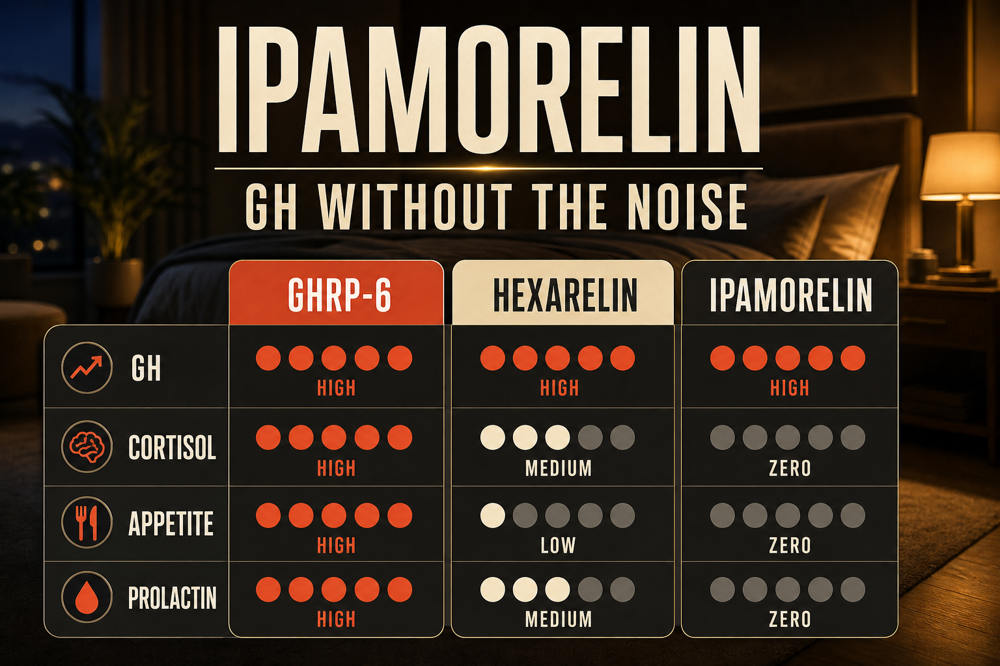

What Ipamorelin Is
Ipamorelin is a synthetic pentapeptide (five amino acids) and selective ghrelin receptor agonist (GHS-R1a) developed in the late 1990s. It was the first GHRP demonstrated to produce significant GH release without meaningful cortisol, prolactin, or appetite co-stimulation - a selectivity profile that distinguishes it from all other GHRPs including GHRP-2, GHRP-6, and Hexarelin.
This selectivity is the key to understanding why Ipamorelin is the preferred GHRP in almost every combination protocol and why it is considered more sustainable for long-term use than its predecessors. When the ghrelin receptor (GHS-R1a) is activated in a non-selective way, it triggers downstream effects on cortisol through the HPA axis, prolactin release, and the hunger response. Ipamorelin's structure produces GH release through GHS-R1a while avoiding these off-target activations - a property sometimes described as GH selectivity.
On its own, Ipamorelin produces a clean two-hour GH pulse from a single injection. This pulse is meaningful but shorter-lived than when combined with a GHRH analog like CJC-1295. The classic Ipamorelin protocol alone is less efficient than the stack - but it is appropriate for people who want to avoid CJC-1295's sustained IGF-1 elevation or who prefer a cleaner, more controlled approach.
Plain English Version
The Precise Light Switch
Before Ipamorelin, the available GH releasing peptides were more like dimmer switches with extra functions attached - when you turned up the GH dial, you also inadvertently adjusted the cortisol lever, the appetite dial, and the prolactin control. The trade-off was acceptable for some protocols, but it meant every adjustment to GH output came with other changes you did not necessarily want.
Ipamorelin is the precise light switch. One function. One output. When you inject it, it tells your pituitary to release growth hormone. The pituitary responds. Two hours later the pulse has passed and your hormonal environment returns to baseline. Cortisol stays stable. Appetite stays normal. Prolactin stays quiet.
This precision matters enormously for people who want the benefits of GH stimulation - better sleep, faster recovery, body composition improvement, anti-aging effects - without managing the downstream consequences of the less selective older compounds. You get the light on in the room you wanted. Nothing else moves.
One sentence: Ipamorelin is the most selective GHRP available - a clean, precise GH pulse with no cortisol, no prolactin, and no appetite side effects.
How To Picture It

How It Works
Ipamorelin binds GHS-R1a receptors in the anterior pituitary with high selectivity, triggering GH release through the ghrelin-mimetic pathway. The selectivity is structural - Ipamorelin's molecular geometry activates GH release without triggering the full ghrelin signaling cascade that would activate cortisol and appetite pathways. The resulting GH pulse peaks at approximately 30-60 minutes post-injection and returns to baseline by 2 hours. Released GH then stimulates hepatic IGF-1 production over the following 12-24 hours.
Documented Benefits
no cortisol, prolactin, or appetite co-stimulation
lean mass increase and fat reduction
the safest GHRP available
Dosing Protocol
| Phase | Dose | Frequency | Timing | Notes |
|---|---|---|---|---|
| Starting | 100-150mcg | Once daily | Bedtime fasted | Establish tolerance |
| Standard | 200mcg | Once daily | Bedtime fasted | Most documented protocol |
| Advanced | 200-300mcg | Twice daily | Bedtime + morning fasted | Enhanced body comp |
| Stack | 200mcg with CJC-1295 | Once or twice daily | Fasted | Most common combination |
Fasting is important - inject 2 hours after eating, wait 30 minutes before eating. Bedtime dosing aligns with natural GH pulse. Cycle 8-12 weeks on, 4 weeks off - pituitary receptor sensitivity does reduce with continuous use.
Reconstitution Standard
IP (5mg vial) + 2ml BAC water = 2.5mg/ml 200mcg = 8 units | 300mcg = 12 units
Dosage Build-Up Timeline
- Week 1-2: 100-150mcg bedtime - establish tolerance
- Week 3-8: 200mcg bedtime - standard therapeutic
- Week 9-12: Add morning dose if desired - 200mcg twice daily
- Week 13-16: 4-week off cycle
- Repeat
Common Mistakes
food (especially carbs/fat) blunts GH release completely
missing alignment with natural GH pulse reduces effectiveness
Ipamorelin is cleaner but not the strongest
pituitary sensitivity does reduce; 4-week breaks preserve long-term effectiveness
Contraindications And Cautions
GH/IGF-1 elevation concern; discuss with oncologist
GH affects insulin sensitivity
WADA prohibited
What To Track
- Sleep quality 1-10 weekly
- Body composition monthly
- Post-exercise recovery time
- IGF-1 bloodwork at baseline and 8-12 week mark
- Morning grogginess - common in first 2 weeks, resolves
Stacks Well With
- CJC-1295 no-DAC - the classic stack; Ipamorelin for clean GH pulse, CJC for extended GHRH signal
- BPC-157 or KLOW - tissue repair alongside GH support
- Retatrutide - metabolic plus body composition dual approach
Sources
- Peptideslabuk. GH Secretagogue Comparison 2026. peptideslabuk.com
- Huddle Men's Health. Ipamorelin 2025 guide. huddlemenshealth.com
- PeakedLabs. CJC+Ipamorelin 2026. peakedlabs.com
- Raun K et al. Ipamorelin first selective GHRP. European Journal Endocrinology. pubmed.ncbi.nlm.nih.gov
- WADA Prohibited List 2025. wada-ama.org
For educational and research documentation purposes only. Not medical advice. Always speak with a qualified healthcare professional before making health decisions.